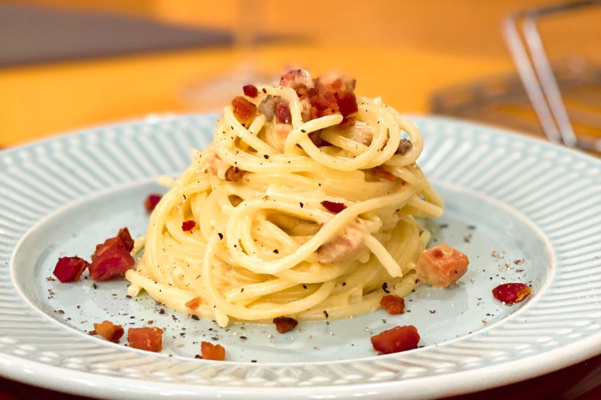

Receita de massa carbonara
A massa carbonara é uma receita italiana mundialmente famosa

Hoje você irá aprender como fazer uma massa carbonara do jeito italiano.
Vamos começar?
Ingredientes
- 50g de queijo parmesão
- 4 gemas
- 200g de guanciale (ou bacon, caso não tenha)
- 280g de massa spaghetti
Modo de preparo
- Coloque as gemas em um recipiente (como uma cumbuca) e misture-as com o queijo parmesão
- Frite o guanciale em uma frigideira ou panela e armazene sua gordura
- Coloque a massa para cozinhar e só tire quando ela estiver al dente (o tempo estará no pacote da massa)
- Cozinhe a banho maria o creme de gemas com a gordura armazenada
- Depois de coiznhar a massa, coloque ela em uma panela e misture com o creme de gemas. Vá adicionando a água do cozimento e misturando.
- Junte o guanciale a massa e estará pronto a sua massa carbonara italiana.